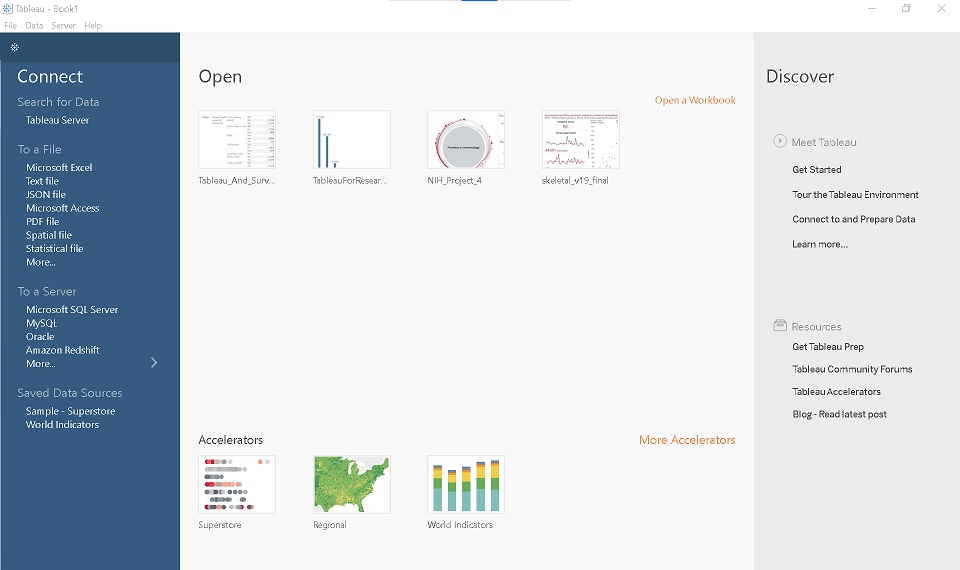

Lesson 1. Getting Started
This lesson provides an introduction to the Tableau workspace and explores effective strategies for finding and critically assessing publicly available data. Readings also offer guidance on understanding audience needs prior to data visualization and outline key principles for creating more impactful visual representations.
Data skills | concepts
- Tableau
- Finding data
- Reading data
Learning objectives
- Apply the DRAMA Framework to critically evaluate a dataset.
- Navigate the Tableau start page, data source page, and workspace.
This tutorial is designed to support a multi-session Tableau for Research workshop hosted by The Ohio State University Libraries Research Commons. It is intended to help the ABSOLUTE beginner, or anyone who is relatively new to Tableau to build the skills and confidence to apply Tableau to research projects.
LESSON 1
Finding and/or obtaining data
Data is everywhere. Data for examples and activities in this tutorial was gathered from DataOhio, data.gov, and Wikipedia. Open data, defined as any data that “can be freely used, re-used, and redistributed by anyone, subject only, at most, to the requirement to attribute and share alike,” serves as a valuable resource for developing data literacy. (Dietrich, n.d.) While government agencies are primary producers of open data, it is also commonly shared by nonprofit organizations, independent researchers, and data enthusiasts. Enagaging with datasets that hold personal relevance can significantly enhance the learning experience, particularly when developing skills in data analysis and visualization. You are encouraged to download a dataset that is personally meaningful to you to use with the practices activities provided in this tutorial.
University Libraries offers several guides to help you Find Data. You can also talk with a librarian about your unique research data needs. Collecting research data on your own requires an understanding of acceptable methods for rigorously and ethically collecting data for your discipline. You can find current methodology for your discipline by talking to experts in your field, searching the literature, and finding ebooks, journals, and more the library catalog.
If you need data for a project, chances are your data may already be collected by a federal, state, or local governmental entity. Major publishers of U.S. government data include:
- Bureau of Economic Analysis
- Bureau of Justice Statistics
- Bureau of Labor Statistics
- Bureau of Transportation Statistics
- Census Bureau
- Economic Research Service of the Department of Agriculture
- Energy Information Administration
- National Center for Education Statistics
- National Center for Health Statistics
- National Center for Science and Engineering Statistics
- Office of Research, Evaluation and Statistics of the Social Security Administration
- Statistics of Income Division of the Internal Revenue Service
Reading data
Reading data effectively requires us to slow down and critically evaluate a dataset to understand its origins, who the dataset was created by and why, how the data was collected, and more. Data is not inherently neutral and context matters. Data analysts have a responsibility to recognize and disclose potential data biases that may distort visualizations and lead to misleading interpretations or narratives. A thorough examination of the dataset’s structure—including its dimensions (categorical variables) and measures (quantitative variables)—and a clear understanding of how these elements are defined, is fundamental to responsible and accurate data analysis.
The DRAMA framework
The DRAMA Framework is a helpful tool for critically evaluating data sources. (Primeau, n.d.)
DRAMA Framework
Date
Relevance
Accuracy
Motivation
Authority
The Tableau Environment
Note:
This tutorial is designed to support multi-session workshops hosted by The Ohio State University Libraries Research Commons.
Since the Tableau for Research workshop takes place in the Research Commons computer lab, the examples provided here use the Tableau Desktop interface. Please note that this interface may look slightly different from the Tableau Desktop Public Edition.
The Start page
When you open Tableau Desktop, you’ll land on the blue Start Page. Here’s what you’ll find:
- Connect (Left Pane): Connect to your data sources. Connections to flat files, such as .xlsx, .csv, and .json documents are listed on the top. Direct connections to tables hosted on servers are listed below.
- Center Pane: Open recently used workbooks.
- Discover (Right Pane): Learn more about Tableau.

With each new release, Tableau introduces new features and improvements. The Discover section is a valuable resource for staying informed and seeing how these features may support your ability to work with, analyze, and argue with data.
Make Learning Meaningful!!!🌟
Let’s take a moment here to emphasize something important:
When learning data analysis and visualization, it’s incredibly helpful to work with data that matters to you.
- 🎵 Love music? Try using a Wikipedia table listing albums or songs by your favorite artist.1
- 🍽️ Foodie at heart? Explore recipes using the TheMealDB API.
- 🏀 Into sports? Check out the curated Sports Data Sets from The Ohio State University Sports and Society Initiative.
Working with familiar or interesting data makes the learning process more engaging—and more fun!
Important!
Always review the copyright and terms of use before sourcing data from any website.
Limited use of copyrighted materials is allowed under certain conditions for journalism, scholarship, and teaching. Use the Resources for determining fair use to verify your project is within the scope of fair use. Contact University Libraries Copyright Services if you have any questions.
The Data Source page
To get started with the Tableau Data Source page, we’ll use the Performers table from the Wikipedia page on Rock and Roll Hall of Fame inductees. The Performers category honors recording artists and bands who have had a significant and lasting impact on the development and legacy of rock and roll.
That said, you’re encouraged to use a dataset that’s personally meaningful to you! Feel free to substitute the example with your own data as you work through the practice activities in this tutorial.
To connect to rock_n_roll_performers.csv in your workshop materials.
On Tableau’s Start Page
- Go to the Connect pane on the left.
- Select Text file.
- Navigate to and open the CSV file.
This opens the Data Source Page.
On the Data Source page you’ll find:
The Connections** pane on the left. Tableau Desktop allows multiple connections, which can be joined or related using common fields. For this tutorial, we will keep things simple and use only the rock_n_roll_performers.csv file.
The Canvas in the top center. The canvas displays the rock_n_roll_performers.csv file in a rectangle. Right-click on this rectangle or use the ▼ caret to:
The Metadata Grid in the bottom center. Here the data headers are displayed as rows. This feature is particularly helpful when you connect to a dataset with multiple tables and fields. The metadata grid allows you to:
The Data Grid on the bottom right. The data grid shows the first 1,000 rows of data in your data source. In the data grid you can:
Dimensions vs. measures - Part 1
What is a measure?
Think of a measure as a variable used for math. Measures represent our quantitative data or units of measure.
What is a dimension?
Dimensions represent the qualitative data used to segment the measures.
Dimension or measure?
Dimensions sometimes function as measures. Age, for example, can be used to categorize data, or as a measure in a calculation. Measures sometimes function as dimensions. An identification number, for example, can represent a person, yet consist of all numbers. If the identification number is added sequentially to a database, it may also be used in a calculation.

Change data type - Option 1
The metadata grid for the rock_n_roll_performers.csv dataset primarily shows dimensions. The Index field represents an identification number and can serve as a dimension or measure. The Year field is currently recognized as a whole number. To change the data type of the Year field:
- Locate the YEAR field in the metadata grid.
- Right-click on the number icon before the field name.
- Select Date & Time from the menu.
| Type | Field Name | Physical Table | Remote Field Name | |
|---|---|---|---|---|
| Number (whole) | Index | rock_n_roll_performers.csv | index | |
 |
Date & Time | Year | rock_n_roll_performers.csv | year |
| String | Image | rock_n_roll_performers.csv | image | |
| String | Name | rock_n_roll_performers.csv | name | |
| String | Inducted Members | rock_n_roll_performers.csv | inducted_members | |
| String | Prior Nominations | rock_n_roll_performers.csv | prior_nominations | |
| String | Induction Presenter | rock_n_roll_performers.csv | induction_presenter | |
| String | Artist | rock_n_roll_performers.csv | artist | |
| String | Image Url | rock_n_roll_performers.csv | image_url | |
| String | Artist Url | rock_n_roll_performers.csv | artist_url |
Wide vs. tall data
Sometimes to efficiently and effectively analyze and/or visualize data we must restructure our data from wide to tall format. In Figure 1 above, each individual is represented by a single row, with separate columns for name, age, and number of visits. To transform this data into tall format, each individual would have a row for each measure. This structure includes:
- A column for the measure name (e.g., “Age”, “Visits”)
- A column for the measure values (e.g., 34, 5)
For many Tableau projects, converting data to a tall format can enhance analysis and visualization.
Try transforming the rock_n_roll_performers.csv dataset from wide to tall format using Tableau’s pivot feature.
- In the data grid, click to highlight the Year column.
- Hold the Shift key, scroll to the right, and click to highlight the Artist Url column.
- Click the ▼ caret on right side of the Artist Url column and select Pivot.
- Tableau will transform the selected columns from a wide format (many columns) to tall format (fewer columns, more rows). ✅ This is useful for reshaping data to make it easier to analyze or visualize in Tableau.
- To undo the pivot, press Ctrl+Z (Windows) or Command+Z (Mac).
The Tableau Workspace
To access the Tableau workspace, select the Sheet1 tab at the bottom of workbook.
Video showing the location of elements listed below.
- The Data Pane and the Analytics Pane are located in the Side Bar on the left.
- The Marks Card is to the right of the Side Bar.
- The Filters Shelf is above the Marks Card.
- Dimensions and measures are placed on the columns and rows Shelves.
- The data visualization is designed in the View.
The more you use Tableau, the more you’ll notice there’s often more than one way to accomplish the same task!!!
Dimensions vs. measures - Part 2
When you connect to a data source, Tableau automatically categorizes each field as either a dimension or a measure. In the Data Pane, dimensions appear above the gray line, while measures are listed below it. If Tableau classifies a dimension as a measure, you can easily correct it by dragging the field above the gray line into the dimension area.
Change data type - Option 2
To change the data type of a field in the Tableau Workspace:
- Locate the field in the data pane.
- Right-click on the data type icon before the field name.
- Select the desired data type from the menu.
Toggle between workspace, data source and start page
| location | Toggles between | |
|---|---|---|
| bottom left | Tableau Workspace and Data Source | |
| top left | Data Source and Start Page | |
| top left | Start Page and Data Source | |
Sheet 1 |
bottom left | Data Source and Tableau Workspace |
Supplemental readings
- by Jonathan Schwabish
- New York : Columbia University Press, 2021.
- by Cole Nussbaumer Knaflic
- Hoboken, New Jersey: Wiley, 2015.
References
Footnotes
Visit the Websites and APIs. Lesson 3. Wikipedia tutorial to learn how to extract tables from HTML using pandas.read_html.See the Websites and APIs. Lesson 4. iCite tutorial and Websites and APIs. Lesson 7. Crossref tutorial to learn how to use APIs to gather data.↩︎